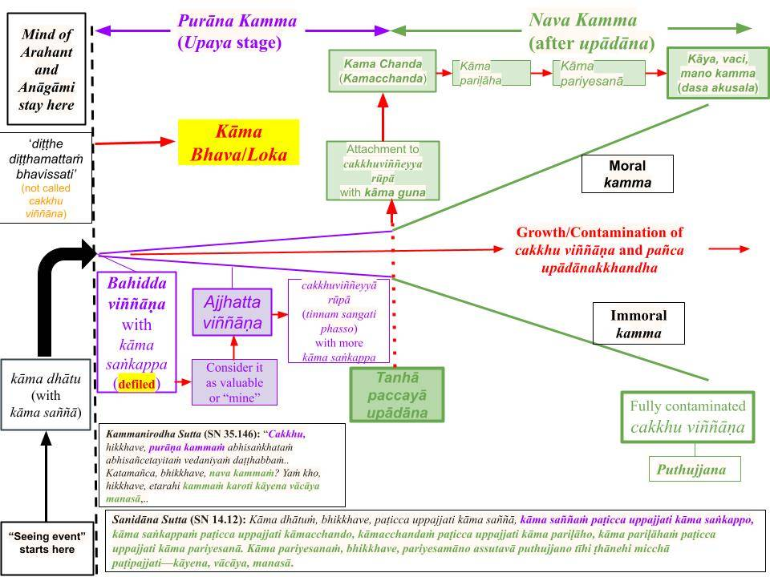

Āhāra in Buddha Dhamma refers to "food" for the mental body, not the physical body.
July 20, 2024; rewritten March 22, 2025 (revised #7 same day)
Āhāra Means "Mental Food"
1. As discussed on this website, a human has two bodies: physical and mental. The "mental body" (manomaya kāyaor gandhabba) is where thoughts arise; it is made of a few Suddhāṭṭhaka, the smallest unit of matter in Buddha Dhamma; see "The Origin of Matter – Suddhāṭṭhaka." In the suttās, the physical body is called "cātumahābhūtikassa kāya" or the "body made up of the four great elements of pathavi, āpo, tejo, vāyo; see, for example, "Assutavā Sutta (SN 12.61)." In some Commentaries it is referred to as "karaja kāya."
Both these bodies need food to survive.
We eat physical food (like bread, rice, etc.) to sustain our physical bodies, but the Buddha did not teach about those foods.
Buddha's teachings are all about the mind. A mind attaches to "pleasurable things in this world" and consumes four types of food to live. The consumption of āhārastops only when all ten sansāric bonds (saṁyojana) are eliminated.
A special category of food called "kabalinkā āhāra" is available only in kāma loka. Three more types of foods are needed in all three lokās (kāma, rupa, and arupa loka). They are (sam)phassa, manō sañcetanā, andviññāṇa āhāra. See "Āhāra Sutta (SN 12.11)." Brahmās in 20 Brahma realms have only the "mental body," and their minds only consume the latter three types of āhāra.
Therefore, the mental body of a human (human gandhabba) consumesall four types of food. In the suttās, āhāra NEVER refers to food for the physical body.
Nibbāna = Cessation of All Four Āhāra
2. All four āhāra to the mental body stop when one becomes an Arahant, i.e., when attaining Nibbāna; see "Āhāra Sutta(SN 12.11)."
However, the mental body of the Arahant can live without āhāra until the death of the physical body. Thus, with the death of the physical body, the mental body also dies, and the Arahant attains Parinibbāna ("full Nibbāna") at that point.
Food is essential for all living beings. If one stops eating physical food (including water) for about seven days or so, one’s physical body will die.
However, a puthujjana's mental body (gandhabba) will not die with the physical body. It comes out of the dead physical body and lives in "gandhabbaloka" until pulled into a womb to be born again with a physical body.
A human gandhabba also has a finite lifetime. It also dies at the end of its lifetime, but another mental body (associated with one of the 31 realms) will immediately be created by the kammic energy associated with that lifestream. See “What Reincarnates? – Concept of a Lifestream”
Nibbāna and Parinibbāna
3. Even though all four āhāra to the mental body cease when one becomes an Arahant, his/her mental body (gandhabba) cannot die as long as it is attached to a living physical body.
At the death of the physical body, Arahant's gandhabba comes out of the dead body. Now, it must be sustained by one or more of the āhāra. Since all four āhāra have ceased, it will die at that instant.
In other words, even if Arahant's gandhabba had not reached the end of its life, it would die instantly at the death of the physical body. Unlike the physical body, the subtle mental body cannot survive even a moment without food (once it is separated from the physical body).
Now the question is: "Why doesn't the Arahant's mind grasp another mental body (i.e., another existence) at that moment (like for other beings)"? That process is called "cuti-paṭisandhi," where cuti is the death of one mental body, and paṭisandhi is the grasping of another. Paṭisandhi (“paṭi” is to “bind,” and “sandhi” is a “joint” in Pāli or Sinhala.) Thus, paṭisandhi means joining a new life at the end of the old. That happens a thought-moment after the last citta of the current existence (bhava.)
4. Two conditions must be satisfied to generate a new mental body at the cuti-paṭisandhi moment: (i) There must be a kamma bījā available to grasp, and (ii) One’s mind must willingly grasp that kamma bījā.
We all have accumulated numerouskamma bījā even in previous lives, so the first condition is always satisfied for anyone. Therefore, the second condition — grasping a new existence (bhava) at the cuti-paṭisandhi moment- is the condition that stops the rebirth process.
With each stage of magga phala, the possibility of grasping another existence decreases as the number of sansāric bonds (saṁyojana) are eliminated. For example, a Sōtapanna‘s mind will not grasp a bhava (existence) in the apāyās with the removal of the first three saṁyojana; A Sakadāgami‘s mind will not grasp human existence. In addition, an Anāgami will not grasp any bhava in the kāma lōka with the removal of the first five saṁyojana, and an Arahant (with all ten saṁyojana eliminated) will not grasp any existence in any realm.
The saṁyojanās are broken at each stage as follows: Sōtapanna(3), Anāgami (2), and Arahant (5). See "Dasa Samyōjana – Bonds in Rebirth Process." They can broken only via cultivating paññā (wisdom).
5. An excellent example from the Tipiṭaka is Ven. Angulimala. He killed almost a thousand people and had accumulated enough strong kamma bījā (in that last life itself) to be reborn in an apāya.
Just after meeting the Buddha, he attained the Sotapanna stage. At that moment, the possibility of rebirth in an apāya was removed with the breaking of the first three saṁyojana.
After several months, he attained Arahanthood, and all ten saṁyojana were eliminated; thus, he was not reborn in any realm when his physical body died.
Weakening and Elimination of Āhāra With Magga Phala
6. All four types of āhāra intake weaken at each stage of magga phala.
For example, "kabalinkā āhāra" is responsible for generating kāma rāga. It is weakened at the Sotapanna and Sakadagami stages and eliminated at the Anāgāmi stage.As we can see, removing the kāma rāga saṁyojana is the same as stopping the intake of kabalinkā āhāra. Note that a Sotapanna only eliminates the three diṭṭhi saṁyojana, but that weakens the kāma rāga (andpaṭigha) saṁyojanās.
The remaining three types of āhāra (samphassa, manō sañcetanā, andviññāṇa āhāra) also weaken with each stage of magga phala. However, they are eliminated only at the Arahantphalawith the breaking of the remaining five saṁyojanās.
7. Sensual pleasures with “close contacts” of smell, taste, and bodily contacts (touch, especially sex) are available only in the realms of kāma loka. Kabalinkā āhāra is closely associated with the six types of “kāma guṇa” available in kāma loka. See "Kāma Guṇa – Origin of Attachment (Tanhā)."
Kabalinkā āhāra means craving for mind-pleasing odors, tastes, and body touches (including sex).
Rūpavācara Brahmās in “rupaloka” experience only two of the five physical senses (sight and sound), and they have “ruparāga” (and mainly crave "jhānic pleasures.")
Arūpavācara Brahmās in “arupa loka” do not experience the five physical senses. They only have the mind or mano (sensing dhammā) and have only “arupa rāga“ (and mainly crave "arupasamāpatti pleasures.")
Therefore, kabalinkā āhāra is the strongest because it triggers the accumulation of "apāyagāmi kamma," leading to rebirth in the apāyās. This is why the "nava kamma" stage is absent in the rupa and arupa Brahma realms.
8. There is yet another way to look at this mechanism of grasping a new bhava at the cuti-paṭisandhi moment. In the uppattiPaṭicca Samuppāda(PS) cycle, a certain bhava is grasped at “upādāna paccayā bhava.“
When we trace the cycle backward, we see that PS starts at “avijjāpaccayāsaṅkhāra” and “saṅkhārapaccayāviññāṇa.“ (Abhi)saṅkhārageneration starts at the "purāna kamma" stage unconsciously, but potent kammic energies that can bring more rebirths occurs only in the "nava kamma" stage with the conscious accumulation of kāya, vaci, and manokamma.
Cessation of all four types of āhāra means the cessation of avijjā and thus the cessation of all subsequent terms in Paṭicca Samuppāda: (abhi)saṅkhāra, (kamma)viññāṇa, namarupa, salāyatana, (sam)phassa, (samphassa-jā-)vedanā, taṇhā, upādāna, bhava, jāti, and soka, parideva,...("the whole mass of suffering.")
No Paṭicca Samuppāda cycle can be active for an Arahant. Thus, at the cuti-paṭisandhi moment, it cannot grasp any existence in this world.
Two Critical Roles of Viññāna
9. Therefore, the word viññāṇa represents much more than just consciousness. Even a "vipākaviññāṇa" (which is bahiddha viññāṇa; see "Purāna and Nava Kamma – Sequence of Kamma Generation") is defiled. That happens automatically due to unbroken saṁyojana. For example, a puthujjana's mind will automatically get to the bahiddha viññāṇa in the “purāna kamma” stage. On the other hand, the mind of an Arahant will stay in kāmadhātu, as indicated in the chart below (taken from the above post).

A “seeing event” for an Arahant is not called a cakkhuviññāṇa. It is called “diṭṭhe diṭṭhamattaṁ bhavissati" or “seeing without rāga, dosa, moha arising in mind.” This critical point is discussed in detail in the above link.
10. Viññāṇa" is one of the four "foods" (viññāṇa āhāra) for accumulating newkamma bījā and also provides "food" or "fuel" for grasping a new existence (bhava.)
Viññāṇa is the opposite of ñāṇa (pronounced "gñāna") or wisdom. When one cultivates ñāṇa, one's avijjā is reduced, and certain types of viññāṇa are concomitantly reduced.
Pronunciation ofviññāṇa:
Pronunciation of ñāṇa:
As one attains the four stages of Nibbāna,avijjā is removed in four stages, and the strength ofviññāṇa is accordingly reduced. Viññāṇamanifests until all ten saṁyojana are removed from the mind at theArahant stage. After that, "seeing" and "hearing" are not called "cakkhu viññāṇa" and "sota viññāṇa", but “diṭṭhe diṭṭhamattaṁ bhavissati and sute sutamattaṁ bhavissati." See "Purāna and Nava Kamma – Sequence of Kamma Generation."
In other words, an Arahant can experience the world with a purified mind that is not blemished by even a trace of greed, hate, or ignorance. Therefore, at death, his purified mind will not grasp an existence (bhava).
Viññāṇa Āhāra = Nāmarupa Formation
11. As long as a mind generates nāmarupa, the expectation of a worldly outcome remains with the mind, and one will be born somewhere in the 31 realms. This is an advanced subject; see "Nāmarūpa Formation." This is why viññāṇais called a type of food for the mental body.
As one proceeds at successive stages of Nibbāna, one will crave fewer and fewer things in this world. For example, at the Anāgami stage, one would have lost all cravings for sensual pleasures — removing a big chunk of nāmarupa formation.
Sañcetanā Āhāra = Defiled Cetanā
12. Kammaviññāṇa is cultivated by thinking, speaking, and acting in such a manner. Thinking, speaking, and acting are done based on manō, vacī, and kāyasaṅkhāra which arise due to sañcetanā (“sañ” + “cētanā” or defiled intentions; cētanā is pronounced “chethanā”).
For example, an alcoholic regularly thinks about drinking, likes to speak about it, and likes to drink. The more he does those, the more that kammaviññāṇa will grow.
It is easy to see how a gambler, smoker, etc, grow their correspondingviññāṇa the same way.
The ability to generate suchviññāṇa can lead to other immoral activities, such as the tendency to lie, steal, and even murder.
Therefore, all activities done in cultivating suchviññāṇa are based on manō sañcetanā. That is why manō sañcetanā are also food for the mental body.
PhassaĀhāra = SamphassaĀhāra
13. The triggers for such sañcetanā are defiled sensory contacts orsamphassa. These are not mere sensory contacts but those arising with "san" (rāga, dosa, moha), i.e., with "defiled intentions." It gives rise to “samphassa-jā-vēdanā."
The distinction betweenphassa and samphassa is explicitly made in Abhidhamma. However, in suttās, "phassa" almost always refers to "samphassa" and never refers to "mere sensory contact."As we have discussed, Abhidhamma was not developed at the time of the Buddha; he summarized Abhidhamma theory to Ven. Sariputta, and it took over 200 years for the bhikkhus of "Sariputta lineage" to finalize the "Abhidhamma Piṭaka." See, "Abhidhamma – Introduction."
When one looks at something, thoughts arise via phassa. But if one looks at it with greed or hate (and ignorance) in mind, that is samphassa (“sañ” + “phassa," which rhymes like "samphassa"); see, “Vēdanā (Feelings) Arise in Two Ways. “
This is why defiled sensory contacts or samphassa are food for the mental body. Such sensory contact can lead to thoughts about immoral actions and give rise to future kammaja kāya.
Therefore, one must avoid sensory contact with sense objects that one has taṇhā for. We need to remember that taṇhā is attachment to something via greed or hate; see “Taṇhā – How We Attach Via Greed, Hate, and Ignorance. “
So, it is a bad idea for a gambler to visit casinos, an alcoholic to make visits to bars, etc. Furthermore, one needs to avoid friends who encourage such activities, too.
It is best to avoid any "defiled contact" (samphassa) that can lead to sense exposures that provide “food” for the mental body, i.e., get us started thinking about those destructive/immoral activities.
14. Now we can see how those three types of food act in sequence to feed the mental body: Defiled sensory contacts (samphassa) can lead to manō sañcetanā, which in turn cultivates viññāṇa. That happens even in the "purāna kamma" stage with the (unconscious) abhisaṅkhārageneration.
Abhisaṅkhāragenerated only with manosaṅkhāradoes not lead to potent kamma that can bring rebirth.
In the "nava kamma" stage, the abhisaṅkhārageneration occurs for defiled speech and bodily actions. Those are the potent kamma that can bring rebirth.
In other words, samphassa automatically starts manō abhisaṅkhāra; then, we start thinking and speaking with a defiled mind, i.e., we start vacī abhisaṅkhāra (consciously generating defiled speech). Then, when the feelings get strong, we will start doing immoral deeds (with kāyaabhisaṅkhāra).
It is essential to realize thatmanō abhisaṅkhāra, vacī abhisaṅkhāra, and kāyaabhisaṅkhāraare all generated in the mind:vacī abhisaṅkhāra are conscious defiled thoughts that can lead to immoral speech; kāyasaṅkhāra are conscious defiled thoughts that move the physical body for immoral deeds.
All three types of saṅkhāra arise due to manō sañcetanā. We cannot think, speak, or do things without generating appropriate manō sañcetanā.
Sensory contacts come through the physical body, are processed by the brain, and passed onto the mental body where samphassa occurs. When the mind (in the gandhabba) attaches to samphassa(defiled contacts), it generates manō sañcetanā and thinks, speaks, and acts accordingly, developing various types of viññāṇa.
It is kabalinkā āhāra (available only in kāma loka) that triggers a mind to engage in accumulating the worst types of kammaby speech and the physical body; thus, they occur only in kāma loka. However, the other three types of āhāra must trigger all attachments present in all three lokās.
That is why all four types of food are for the mental body.
No Dhamma do Buddha, Āhāra refere-se ao “alimento” para o corpo mental, e não para o corpo físico.
20 de julho de 2024; reescrito em 22 de março de 2025 (revisão nº 7 no mesmo dia)
Āhāra significa “alimento mental”
1. Conforme discutido neste site, o ser humano possui dois corpos: o físico e o mental. O “corpo mental” (manomaya kāyaou gandhabba) é onde surgem os pensamentos; ele é composto por alguns Suddhāṭṭhaka, a menor unidade de matéria no Dhamma do Buddha; veja “A Origem da Matéria – Suddhāṭṭhaka”. Nos suttās, o corpo físico é chamado de “cātumahābhūtikassa kāya” ou “corpo composto pelos quatro grandes elementos: pathavi, āpo, tejo e vāyo”; veja, por exemplo, “Assutavā Sutta (SN 12.61)”. Em alguns Comentários, ele é referido como “karaja kāya”.
Ambos os corpos precisam de alimento para sobreviver.
Comemos alimentos físicos (como pão, arroz etc.) para sustentar nossos corpos físicos, mas o Buddha não ensinou sobre esses alimentos.
Os ensinamentos do Buddha tratam exclusivamente da mente. A mente apega-se às “coisas prazerosas deste mundo” e consome quatro tipos de alimento para viver. O consumo de āhāracessa somente quando todos os dez laços samsáricos (saṁyojana) são eliminados.
Uma categoria especial de alimento chamada “kabalinkā āhāra” está disponível apenas no kāma loka.Mais três tipos de alimentos são necessários em todos os três lokās (kāma, rupa e arupa loka). São eles: (sam)phassa, manō sañcetanā eviññāṇa āhāra. Veja “Āhāra Sutta (SN 12.11)”. Os Brahmās nos 20 reinos de Brahma possuem apenas o “corpo mental”, e suas mentes consomem apenas os três últimos tipos de āhāra.
Portanto, o corpo mental de um ser humano (gandhabba humano) consometodos os quatro tipos de alimento. Nos suttās, āhāra NUNCA se refere a alimento para o corpo físico.
Nibbāna = Cessação de Todos os Quatro Āhāra
2. Todos os quatro āhāra para o corpo mental cessam quando alguém se torna um Arahant, ou seja, ao atingir o Nibbāna; veja “Āhāra Sutta(SN 12.11)”.
No entanto, o corpo mental do Arahant pode viver sem āhāra até a morte do corpo físico. Assim, com a morte do corpo físico, o corpo mental também morre, e o Arahant alcança o Parinibbāna (“Nibbāna completo”) nesse momento.
A alimentação é essencial para todos os seres vivos. Se alguém deixar de ingerir alimentos físicos (incluindo água) por cerca de sete dias, seu corpo físico morrerá.
No entanto, o corpo mental de umputhujjana (gandhabba) não morre junto com o corpo físico. Ele sai do corpo físico morto e vive no “gandhabbaloka” até ser atraído para um útero para renascer com um corpo físico.
Um gandhabba humano também tem uma vida finita. Ele também morre ao final de sua vida, mas outro corpo mental (associado a um dos 31 reinos) será imediatamente criado pela energia kármica associada a essa corrente de vida. Veja “O que reencarna? – Conceito de uma corrente de vida”
Nibbāna e Parinibbāna
3. Embora todos os quatro āhāra do corpo mental cessem quando alguém se torna um Arahant, seu corpo mental (gandhabba) não pode morrer enquanto estiver ligado a um corpo físico vivo.
Com a morte do corpo físico, o gandhabba do Arahant sai do corpo morto. Agora, ele deve ser sustentado por um ou mais dos āhāra. Como todos os quatro āhāra cessaram, ele morrerá naquele instante.
Em outras palavras, mesmo que o gandhabba do Arahant não tivesse chegado ao fim de sua vida, ele morreria instantaneamente com a morte do corpo físico. Ao contrário do corpo físico, o corpo mental sutil não consegue sobreviver nem mesmo por um momento sem alimento (uma vez separado do corpo físico).
Agora, a pergunta é: “Por que a mente do Arahant não se apega a outro corpo mental (ou seja, outra existência) naquele momento (como acontece com outros seres)?” Esse processo é chamado de “cuti-paṭisandhi”, em que cuti é a morte de um corpo mental e paṭisandhi é a apreensão de outro. Paṭisandhi (“paṭi” significa “ligar” e “sandhi” é uma “junção” em Pāli ou cingalês). Assim, paṭisandhi significa unir-se a uma nova vida ao final da antiga. Isso ocorre um momento de pensamento após o último citta da existência atual (bhava).
4. Duas condições devem ser satisfeitas para gerar um novo corpo mental no momento do cuti-paṭisandhi: (i) Deve haver um kamma bījā disponível para ser agarrado, e (ii) a mente da pessoa deve agarrar voluntariamente esse kamma bījā.
Todos nós acumulamos inúmeroskamma bījā, mesmo em vidas anteriores, de modo que a primeira condição está sempre satisfeita para qualquer pessoa. Portanto, a segunda condição — apegar-se a uma nova existência (bhava) no momento do cuti-paṭisandhi — é a condição que interrompe o processo de renascimento.
A cada estágio do magga phala, a possibilidade de se apegar a outra existência diminui à medida que o número de laços samsáricos (saṁyojana) é eliminado. Por exemplo, a mente de umSōtapanna não se apegará a um bhava (existência) nos apāyās com a remoção dos três primeiros saṁyojana; a mente de um Sakadāgami não se apegará à existência humana. Além disso, um Anāgami não se apegará a nenhum bhava no kāma lōka com a remoção dos primeiros cinco saṁyojana, e um Arahant (com todos os dez saṁyojana eliminados) não se apegará a nenhuma existência em nenhum reino.
Os saṁyojanās são rompidos em cada estágio da seguinte forma: Sōtapanna(3), Anāgami (2) e Arahant (5). Veja “Dasa Samyōjana – Laços no Processo de Renascimento”. Eles só podem ser quebrados por meio do cultivo de paññā (sabedoria).
5. Um excelente exemplo do Tipiṭaka é o Venerável Angulimala. Ele matou quase mil pessoas e acumulou kamma bījā suficientemente forte (naquela última vida) para renascer em um apāya.
Logo após encontrar o Buddha, ele alcançou o estágio de Sotapanna. Naquele momento, a possibilidade de renascimento em um apāya foi eliminada com a quebra dos três primeiros saṁyojana.
Após vários meses, ele alcançou o estado de Arahant, e todos os dez saṁyojana foram eliminados; assim, ele não renasceu em nenhum reino quando seu corpo físico morreu.
Enfraquecimento e eliminação do Āhāra com o Magga Phala
6. Todos os quatro tipos de ingestão de āhāra enfraquecem a cada estágio do magga phala.
Por exemplo, o “kabalinkā āhāra” é responsável por gerar o kāma rāga. Ele é enfraquecido nos estágios de Sotapanna e Sakadagami e eliminado no estágio de Anāgāmi.Como podemos ver, remover o kāma rāga saṁyojana equivale a interromper a ingestão de kabalinkā āhāra. Observe que um Sotapanna elimina apenas os três diṭṭhi saṁyojana, mas isso enfraquece os saṁyojanās de kāma rāga (epaṭigha).
Os três tipos restantes de āhāra (samphassa, manō sañcetanā e viññāṇa āhāra) também se enfraquecem a cada estágio do magga phala. No entanto, eles só são eliminados no Arahantphala, com a quebra dos cinco saṁyojanās restantes.
7. Os prazeres sensuais com “contatos íntimos” de olfato, paladar e contatos corporais (toque, especialmente sexo) estão disponíveis apenas nos reinos do kāma loka. Kabalinkā āhāra está intimamente associado aos seis tipos de “kāma guṇa” disponíveis no kāma loka. Veja “Kāma Guṇa – Origem do apego (Tanhā)”.
Kabalinkā āhāra significa desejo por odores, sabores e toques corporais (incluindo sexo) que agradam à mente.
Os Brahmās rūpavācara no “rupaloka” experimentam apenas dois dos cinco sentidos físicos (visão e audição) e possuem “ruparāga” (e, principalmente, anseiam por “prazeres jhānicos”).
Os Brahmās Arūpavācara no “arupa loka” não experimentam os cinco sentidos físicos. Eles possuem apenas a mente ou mano (percebendo dhammā) e têm apenas “arupa rāga” (e anseiam principalmente por “prazeres de arupasamāpatti”).
Portanto, o kabalinkā āhāra é o mais forte, pois desencadeia o acúmulo de “apāyagāmi kamma”, levando ao renascimento nos apāyās. É por isso que o estágio do “nava kamma” está ausente nos reinos Brahmarupa e arupa.
8. Há ainda outra maneira de analisar esse mecanismo de apego a um novo bhava no momento do cuti-paṭisandhi. No ciclo de Paṭicca Samuppāda(PS) deuppatti, um determinado bhava é agarrado em “upādāna paccayā bhava”.
Quando rastreamos o ciclo de trás para frente, vemos que o PS começa em “avijjāpaccayāsaṅkhāra” e “saṅkhārapaccayāviññāṇa”. A geração de (abhi)saṅkhāra começa no estágio “purāna kamma” de forma inconsciente, mas as energias kármicas potentes, capazes de gerar mais renascimentos, só ocorrem no estágio “nava kamma”, com o acúmulo consciente de kāya, vaci e manokamma.
A cessação de todos os quatro tipos de āhāra significa a cessação de avijjā e, portanto, a cessação de todos os termos subsequentes no Paṭicca Samuppāda: (abhi)saṅkhāra, (kamma)viññāṇa, namarupa, salāyatana, (sam)phassa, (samphassa-jā-)vedanā, taṇhā, upādāna, bhava, jāti e soka, parideva,... (“toda a massa de sofrimento”.)
Nenhum ciclo de Paṭicca Samuppāda pode estar ativo para um Arahant. Assim, no momento do cuti-paṭisandhi, ele não pode se apegar a nenhuma existência neste mundo.
Duas Funções Críticas do Viññāna
9. Portanto, a palavra viññāṇa representa muito mais do que apenas consciência. Mesmo um “vipākaviññāṇa” (que é bahiddha viññāṇa; veja “Purāna e Nava Kamma – Sequência de Geração de Kamma”) está contaminado. Isso ocorre automaticamente devido ao saṁyojana ininterrupto. Por exemplo, a mente de um puthujjana chegará automaticamente ao bahiddha viññāṇa no estágio do “purāna kamma”. Por outro lado, a mente de um Arahant permanecerá no kāmadhātu, conforme indicado no gráfico abaixo (retirado da postagem acima).
Um “evento de visão” para um Arahant não é chamado de cakkhuviññāṇa. É chamado de “diṭṭhe diṭṭhamattaṁ bhavissati” ou “ver sem que rāga, dosa e moha surjam na mente”. Esse ponto crítico é discutido em detalhes no link acima.
10. “Viññāṇa” é um dos quatro “alimentos” (viññāṇa āhāra) para acumular novoskamma bījā e também fornece “alimento” ou “combustível” para se agarrar a uma nova existência (bhava).
Viññāṇa é o oposto de ñāṇa (pronuncia-se “gñāna”) ou sabedoria. Quando se cultiva ñāṇa, oavijjā da pessoa é reduzido, e certos tipos de viññāṇa são reduzidos concomitantemente.
Pronúncia deviññāṇa:
Pronúncia deñāṇa:
À medida que se alcança os quatro estágios de Nibbāna, o avijjā é removido em quatro estágios, e a intensidade doviññāṇa é reduzida de acordo com isso. O viññāṇase manifesta até que todos os dez saṁyojana sejam removidos da mente no estágio deArahant. Depois disso, “ver” e “ouvir” não são mais chamados de “cakkhu viññāṇa” e “sota viññāṇa”, mas “diṭṭhe diṭṭhamattaṁ bhavissati e sute sutamattaṁ bhavissati”. Veja “Purāna e Nava Kamma – Sequência da Geração do Kamma”.
Em outras palavras, um Arahant pode experimentar o mundo com uma mente purificada que não está manchada nem mesmo por um traço de ganância, ódio ou ignorância. Portanto, na morte, sua mente purificada não se apegará a uma existência (bhava).
Viññāṇa Āhāra = Formação de Nāmarupa
11. Enquanto a mente gerar nāmarupa, a expectativa de um resultado mundano permanecerá na mente, e a pessoa renascerá em algum dos 31 reinos. Este é um assunto avançado; consulte “Formação de Nāmarūpa”. É por isso que viññāṇaé chamado de um tipo de alimento para o corpo mental.
À medida que se avança pelos estágios sucessivos de Nibbāna, a pessoa passará a desejar cada vez menos coisas neste mundo. Por exemplo, no estágio de Anāgami, a pessoa já terá perdido todo o desejo por prazeres sensuais — removendo uma grande parte da formação denāmarupa.
Sañcetanā Āhāra = Cetanā Impuro
12. O kammaviññāṇa é cultivado ao pensar, falar e agir dessa maneira. Pensar, falar e agir são realizados com base em manō, vacī e kāyasaṅkhāra, que surgem devido ao sañcetanā (“sañ” + “cētanā” ou intenções impuras; cētanā pronuncia-se “chethanā”).
Por exemplo, um alcoólatra pensa regularmente em beber, gosta de falar sobre isso e gosta de beber. Quanto mais ele faz essas coisas, mais esse kammaviññāṇa cresce.
É fácil perceber como um jogador, fumante etc. aumentam seu viññāṇa correspondente da mesma maneira.
A capacidade de gerar talviññāṇa pode levar a outras atividades imorais, como a tendência a mentir, roubar e até mesmo matar.
Portanto, todas as atividades realizadas no cultivo desseviññāṇa baseiam-se no manō sañcetanā. É por isso que o manō sañcetanā também serve de alimento para o corpo mental.
PhassaĀhāra = Samphassa Āhāra
13. Os gatilhos para tal sañcetanā são os contatos sensoriais contaminados, ousamphassa. Estes não são meros contatos sensoriais, mas aqueles que surgem com “san” (rāga, dosa, moha), ou seja, com “intenções contaminadas”. Isso dá origem a “samphassa-jā-vēdanā”.
A distinção entrephassa e samphassa é feita explicitamente no Abhidhamma. No entanto, nos suttās, “phassa” quase sempre se refere a “samphassa” e nunca se refere a “mero contato sensorial”.Conforme já discutimos, o Abhidhamma não havia sido desenvolvido na época do Buddha; ele resumiu a teoria do Abhidhamma ao Venerável Sariputta, e levou mais de 200 anos para que os bhikkhus da “linhagem de Sariputta” finalizassem o “Abhidhamma Piṭaka”. Veja “Abhidhamma – Introdução”.
Quando alguém olha para algo, pensamentos surgem por meio do phassa. Mas se alguém olha para isso com ganância ou ódio (e ignorância) na mente, isso é samphassa (“sañ” + “phassa”, que rima como “samphassa”); veja “Vēdanā (Sentimentos) Surgem de Duas Maneiras”.
É por isso que os contatos sensoriais contaminados, ou samphassa, são alimento para o corpo mental. Tal contato sensorial pode levar a pensamentos sobre ações imorais e dar origem a futuros kammaja kāya.
Portanto, é uma má ideia um jogador frequentar cassinos, um alcoólatra ir a bares, etc. Além disso, é preciso evitar também amigos que incentivem tais atividades.
É melhor evitar qualquer “contato impuro” (samphassa) que possa levar a exposições sensoriais que forneçam “alimento” para o corpo mental, ou seja, que nos levem a começar a pensar nessas atividades destrutivas/imorais.
14. Agora podemos ver como esses três tipos de alimento atuam em sequência para alimentar o corpo mental: os contatos sensoriais contaminados (samphassa) podem levar ao manō sañcetanā, que, por sua vez, cultiva o viññāṇa. Isso acontece mesmo no estágio do “purāna kamma”, com a geração (inconsciente) de abhisaṅkhāra.
O abhisaṅkhāragerado apenas com manosaṅkhāranão leva a um kamma potente capaz de provocar o renascimento.
No estágio “nava kamma”, a geração deabhisaṅkhāra ocorre para a fala e as ações corporais impuras. Esses são oskammapotentes que podem levar ao renascimento.
Em outras palavras, o samphassa inicia automaticamente o manō abhisaṅkhāra; então, começamos a pensar e a falar com uma mente impura, ou seja, iniciamos o vacī abhisaṅkhāra (gerando conscientemente a fala impura). Então, quando as sensações se intensificam, passamos a praticar atos imorais (com kāyaabhisaṅkhāra).
É essencial compreender quemanō abhisaṅkhāra, o vacī abhisaṅkhāra e o kāyaabhisaṅkhārasão todos gerados na mente:o vacī abhisaṅkhāra consiste em pensamentos conscientes e impuros que podem levar à fala imoral; kāyasaṅkhāra são pensamentos conscientes e impuros que movem o corpo físico para atos imorais.
Todos os três tipos de saṅkhāra surgem devido ao manō sañcetanā. Não podemos pensar, falar ou agir sem gerar o manō sañcetanā apropriado.
Os contatos sensoriais chegam através do corpo físico, são processados pelo cérebro e transmitidos ao corpo mental, onde ocorre o samphassa. Quando a mente (no gandhabba) se apega ao samphassa(contatos impuros), ela gera manō sañcetanā e pensa, fala e age de acordo com isso, desenvolvendo vários tipos de viññāṇa.
Éo kabalinkā āhāra (disponível apenas no kāma loka) que leva a mente a se envolver na acumulação dos piores tipos de kammapor meio da fala e do corpo físico; assim, eles ocorrem apenas no kāma loka. No entanto, os outros três tipos de āhāra devem desencadear todos os apegos presentes nos três lokās.
É por isso que todos os quatro tipos de alimento são destinados ao corpo mental.